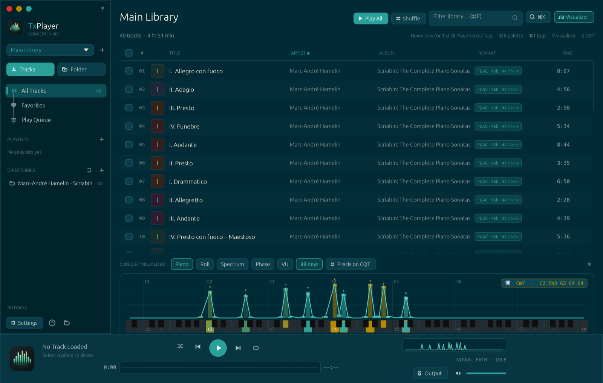
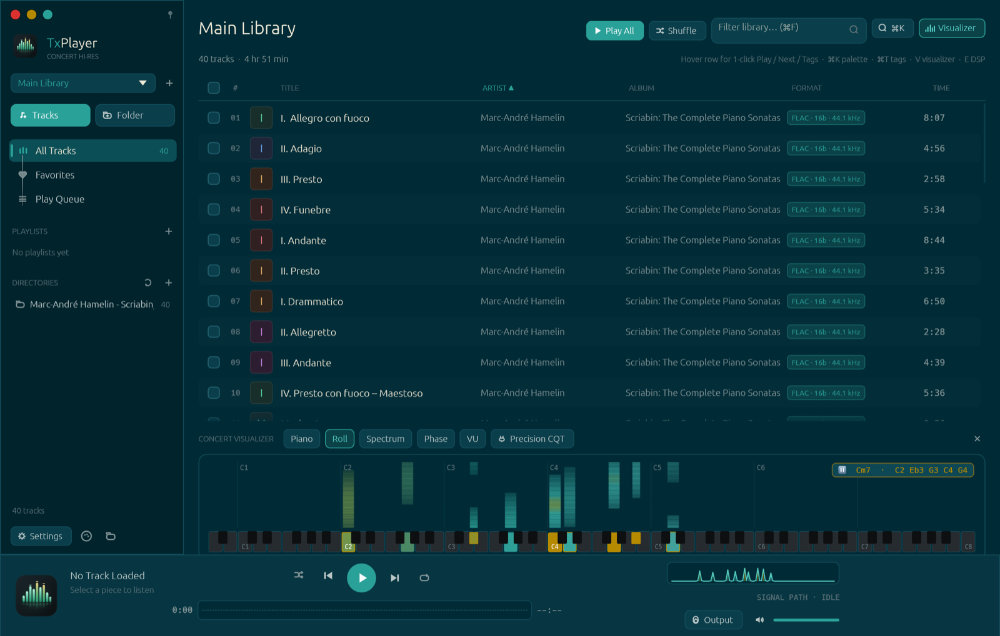
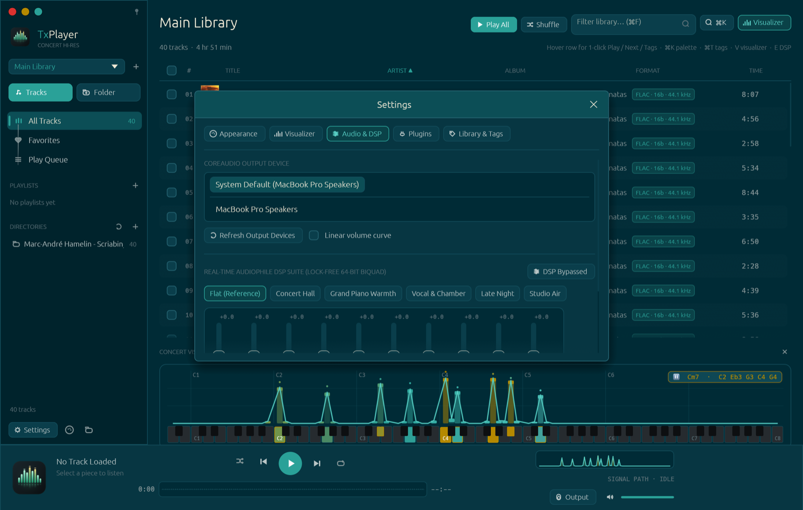
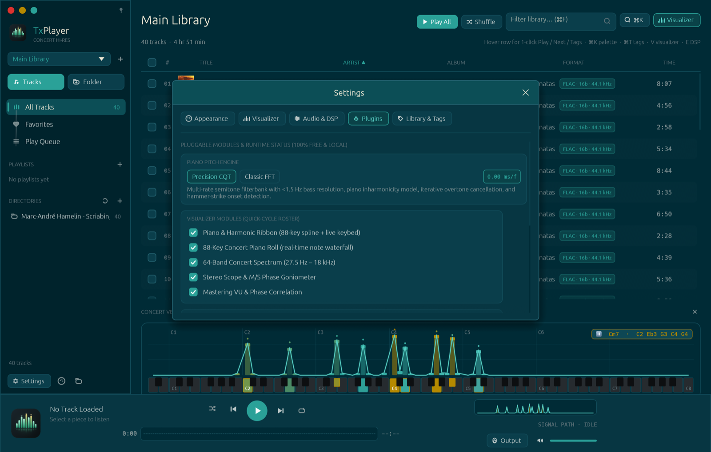

FLAC · ALAC · WAV · AIFF
Pure-Rust SIMDNative Symphonia SIMD decoding up to 32-bit / 384 kHz+ with sample-accurate gapless album transitions, Play-from-RAM pre-buffering, and live VBR/CBR telemetry.
Audiophile music player & master library · macOS · Windows · Linux
TxPlayer is a native Rust audiophile music player built with eframe / egui,
Symphonia SIMD, CPAL, and Rubato.
Bit-perfect Exclusive DAC playback and live native DSD over PCM (DoP v1.1),
a lock-free 64-bit DSP & FFT Convolution engine, a real-time
88-key Precision CQT piano visualizer, and a relational classical & collector
music database — in an 8.5 MB binary. 100% local, zero cloud, zero subscriptions.
1 Drop Music & Listen Bit-Perfect
Drag any folder onto TxPlayer. Open Signal Path or ⌘, → Audio & DSP to enable Exclusive DAC, Direct 0.0 dBFS Lock, or native DoP v1.1.
2 Build & Run Native Release (Rust 1.95+)
cargo run --release
3 Package Signed macOS App & DMG
./scripts/package-macos.sh

Engineered for precision
Query your entire classical & Hi-Res archive in milliseconds with structured Power-Search tokens, verify every single stage of your live 5-Stage Signal Path, and clean messy album rips off-thread with Batch Tag Transforms.
Every metric — from Dynamic Range (DR) and LUFS to ultrasonic TrueHz authenticity verdicts — is computed locally in pure Rust and persisted straight into your library database.
1# Combine classical metadata, fidelity & audit metrics live 2composer:beethoven dr>=12 rate>=96 #reference 3 4# Find Deutsche Grammophon 24-bit FLAC masters rated 4★+ 5label:grammophon codec:flac bits>=24 rating>=4 6 7# Isolate specific opus / catalog works or native 1-bit DSD 8work:op.27 artist:pollini 9codec:dsd year:1977
1[1] SOURCE DSF 1-bit · DSD128 (5.6448 MHz) · RAM Buffer 2[2] TRANSPORT DoP v1.1 0x05/0xFA Marker Framing · LSB→MSB 3[3] RESAMPLER Native Hardware Match (352.8 kHz · Zero SRC) 4[4] 64-BIT DSP Hard-Bypassed (Bit-Perfect Direct Path) 5[5] OUTPUT DAC CoreAudio Exclusive Hog Mode · I32 · 0.0 dBFS 6 7# Automatic fallback to 64-bit Blackman-Harris LUT FIR PCM 8# whenever hardware doesn't expose native I32 DoP sample rates.
1# Before: messy classical rip filename & swapped fields 2Title: "04. goldberg variations bwv 988 iii (live)" 3Artist: "Johann Sebastian Bach" Composer: "Glenn Gould" 4 5▸ Strip Track # + Smart Title Case + Swap Artist ↔ Composer 6 7Track #: 4 Title: "Goldberg Variations BWV 988 III (Live)" 8Artist: "Glenn Gould" Composer: "Johann Sebastian Bach"
First steps & build
cargo test && cargo run --release
Requires Rust 1.95+ (Edition 2024). Produces a single stripped native binary (~8.5 MB) with zero Electron or WebView dependencies.
./scripts/package-macos.sh
Builds a signed TxPlayer.app with multi-resolution Retina AppIcon.icns and a distributable TxPlayer.dmg.
txplayer --vis-mode spectrogram --theme studio-reference
Pass files/folders directly, pick any of the 9 themes or 6 visualizers, or launch --compact for mini-player mode.
Core playback (FLAC, ALAC, WAV, AIFF, CAF, DSD64–512, MP3, AAC, OGG, CUE), all 64-bit DSP/Convolution, and all DR/TrueHz/EBU R128 analysis are 100% pure Rust. Install optional ffmpeg for lossless file tag writing & archive codecs (.wv, .ape, .opus) and fpcalc for AcoustID fingerprinting — verified live inside Settings → Plugins → Tool Health. On ad-hoc signed macOS builds, open via Right-Click → Open or xattr -cr /Applications/TxPlayer.app.
Why TxPlayer
Most audiophile players force a painful trade-off: pay recurring subscriptions for a heavy cloud-tethered suite, or settle for bare-bones file browsers that ignore classical metadata, real-time acoustic instrumentation, and database curation.
TxPlayer combines a bit-perfect native Rust audio engine, studio-grade 64-bit DSP & FFT convolution, a concert-hall 88-key Precision CQT piano & spectrogram stage, and a full relational collector library database inside one calm, instant native desktop app. Nothing leaves your machine.
Formats & audio pipeline
From 16-bit Red Book FLAC and legacy CP1250 classical CUE sheets to 24-bit/384 kHz studio masters, 1-bit DSD512, WavPack, Monkey's Audio, and SACD .iso discs.
Native Symphonia SIMD decoding up to 32-bit / 384 kHz+ with sample-accurate gapless album transitions, Play-from-RAM pre-buffering, and live VBR/CBR telemetry.
Matches hardware DAC sample rates natively via CoreAudio Hog Mode / WASAPI / ALSA with optional Direct 0.0 dBFS volume lock and saved per-device profiles.
Optional integer-multiple 2×, 4×, or Max DAC oversampling via Blackman-Harris Sinc filters (Fast, High, Ultra) paired with TPDF or 2nd-order noise-shaped dither.
Streams raw 1-bit DSD64 (176.4 kHz) and DSD128 (352.8 kHz) bit-identically via 0x05/0xFA 24-bit I32 frames with DSF LSB→MSB reversal and gold Signal Path verification.
When using headphones, DSP, or non-DoP DACs, TxPlayer seamlessly decodes .dsf and .dff through a pure-Rust 64-bit Blackman-Harris LUT FIR PCM engine with ID3/cover extraction.
Pure-Rust sector-510 SACDMTOC inspector built into Library Insights to read disc catalog metadata, Stereo/Multichannel area flags, and album info directly from SACD images.
Pure-Rust container header and full APEv2 classical/ReplayGain/cover tag probers with seamless lossless streaming playback, seeking, Play-from-RAM, and DR/TrueHz auditing.
Pure-Rust OpusHead and OpusTags metadata parser alongside native MP3, AAC/M4A, OGG/Vorbis, MKV, and WebM decoding.
Virtual multi-track album slicing supporting REM COMPOSER, REM DATE, REM GENRE, and legacy Central European / Japanese encodings cleanly.
Complete feature depth
31 Hz – 16 kHz) on a 20 Hz – 20 kHz response canvas with floating Hz · dB telemetry and double-click 0.0 dB reset.txt headphone target curves alongside built-in reference profilesD anytime to flip between your active DSP chain and bit-identical bypass512-sample blocks up to 16,384 taps, zero audio-thread heap allocationsL/R Balance (double-click to center), Mono fold-down, Ø Polarity 180° invert, and L ↔ R channel swap-0.7 dBFS soft-knee limiter-18 LUFS reference) with peak guard1×, ÷4, ÷16, auto-scaled for Hi-Res) with Railsback stretch tuningpp → ff color shading, live chord readout, and frozen keys when paused for musical study96 time columns × 64 logarithmic frequency bins (27.5 Hz – 18 kHz)100 Hz – 16 kHz) plus live dominant PEAK Hz badge400 ms), Short-Term (3 s) LUFS, and 4× oversampled True Peak (dBTP)-1.0 .. +1.0 phase meter to catch polarity issuesComposer, Conductor, Orchestra, Work / Opus, Record Label, Catalog #, Comment, and freeform #custom-tagsDR, LUFS, True Peak, Bandwidth, and TrueHz verdicts plus inline color-coded DR pills in the track list.bak safety, and a 2,000-play history logTracks · Albums · Artists · Composers · Works · Genres · Labels · Years · FoldersDISC 1 / DISC 2 dividers, persisted Album DR badge, inline Collector Liner Notes, .pdf Booklet launcher, and High-Res Scans GalleryAll | Hi-Res | DSD | Lossless | ★★★★+ live chipsMatch ALL / ANY rule views across 16 fields with live match previewcomposer:, dr>=, rate>=, bits>=, codec:, label:, work:, and #tagBEST master detection with 1-click Keep Best Quality and Prune Missing Filesffmpeg -c copy so audio streams are never re-encoded.html): Self-contained dark/light print-styled catalog with KPI cards, Collector Liner Notes, gold DR badges & tags.md): Clean album-grouped tables ready for Obsidian, Notion, or GitHubFLAC · 24-bit/96 kHz · DR13 · -16.4 LUFS) directly to clipboardL for live time-synced .lrc lyrics alongside playback[) and Loop B (]) with a clickable golden transport pill + variable speed (0.75× – 1.5×)⌘B) and gentle 5-second fade-out sleep timer⌘K Command PaletteShown, not told
Zero mockups — real captures straight from TxPlayer's GPU-accelerated egui renderer. Step through the views or click any capture for full-screen inspection.



Documentation & Quick Guide
.wav FFT convolution, crossfeed, dither & Mastering ConsoleAudiophile integrity
When Bit-Perfect or Native DoP v1.1 is active, every DSP biquad, convolver, dither, and gain stage is hard-bypassed — verified with unit-tested bit-identity checks.
All 64-bit EQ, AutoEQ PEQ, partitioned FFT convolution, crossfeed, and visual sidechain taps run lock-free with zero heap allocations inside the real-time callback.
Your library database, play history, liner notes, Local Radio, and TrueHz/DR/LUFS analysis never touch a cloud server. No account, no license key, no telemetry.
Every save rotates your previous database cleanly to libraries.json.bak, paired with 1-click portable JSON backup/restore and CSV/Markdown/HTML exports.
Writing tags to audio files uses lossless stream copy (ffmpeg -c copy) — your FLAC, ALAC, or WAV audio frames are never decoded or re-encoded.
Core DSP bit-identity, partitioned FFT impulse reconstruction, DoP v1.1 framing, SACD TOC parsing, Precision CQT accuracy, EBU R128 LUFS, and DB invariants are all unit tested.